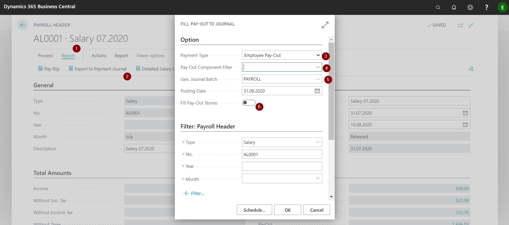
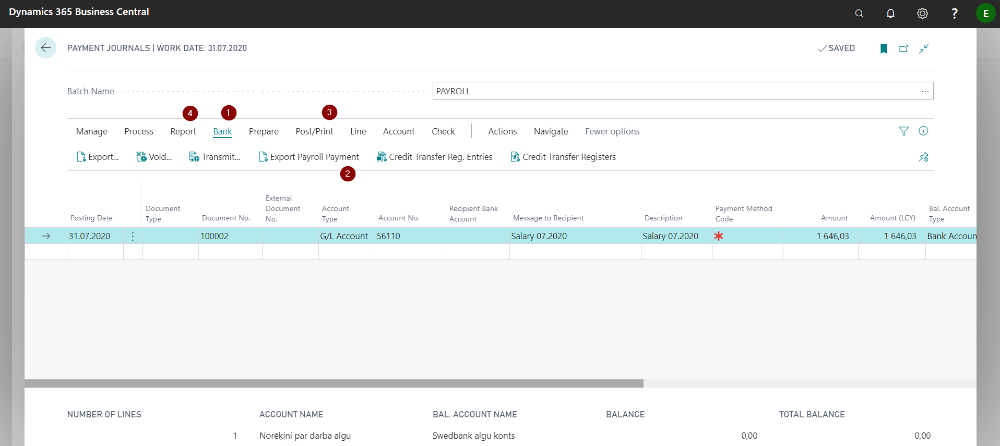
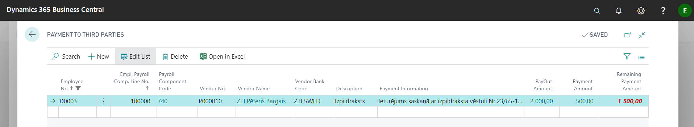
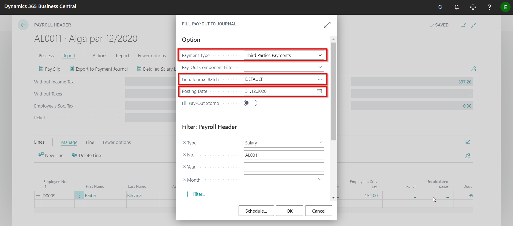
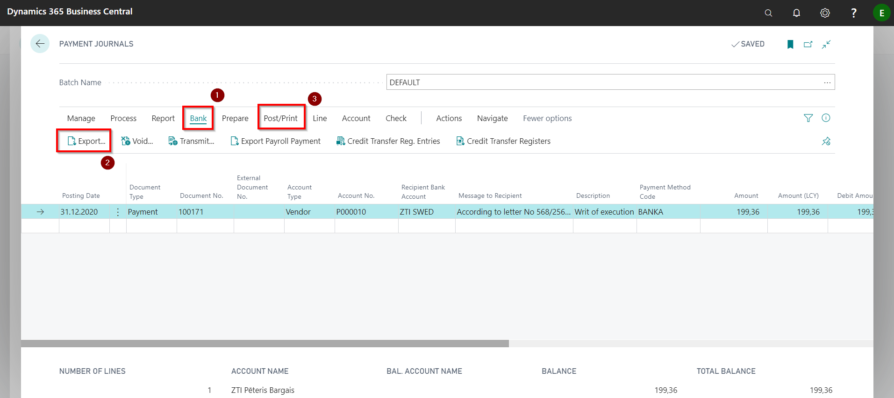
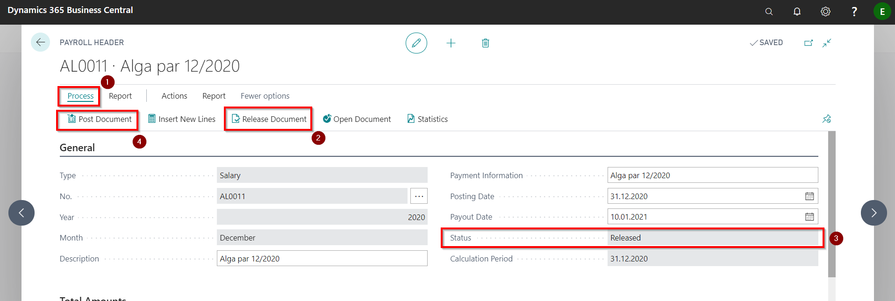
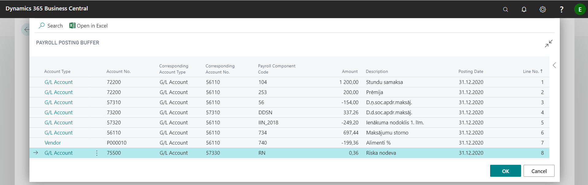
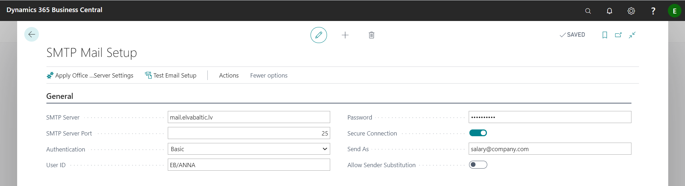
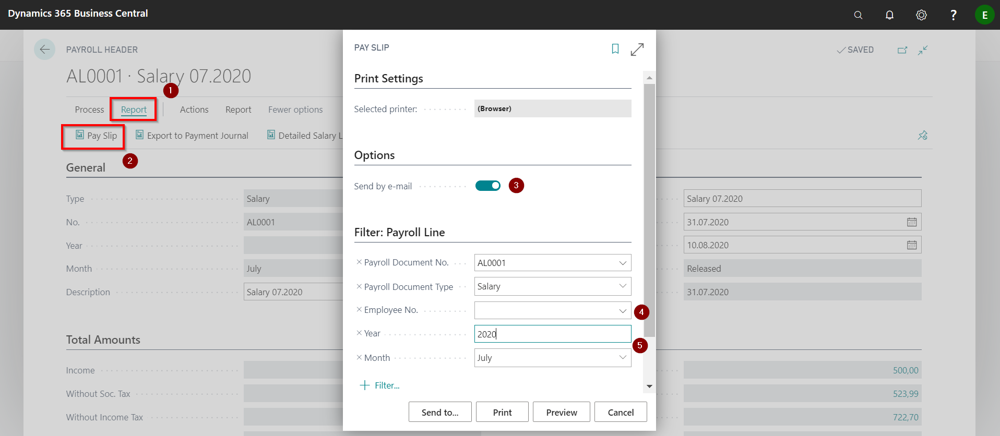

Salary payment
Preparing the payments
The salary is transferred to the employee's bank account. Information about the bank code and account is entered in the employee card tab Payments, but the type of payout is determined by the default payroll component (Code: BANKA) in the section Payroll Components.
Salary list for transfer to the bank can be prepared by clicking on Report ( ) - Export to Payment Journal (
) - Export to Payment Journal ( ). In the options you can select the required payment type (
). In the options you can select the required payment type ( ):
):
- Employee Pay-Out (only payments to employees),
- Third Parties Payments (deduction payments to third parties),
- All (both of the above mentioned)
You can also use filter and sort out payout components (from what company account money will be transferred) ( ), and in which payment journal's batch to make entries (
), and in which payment journal's batch to make entries ( ).
In case it is necessary to correct already made payment, a tick must be placed at Fill Pay-Out Storno (
).
In case it is necessary to correct already made payment, a tick must be placed at Fill Pay-Out Storno ( ). After you post this cancellation journal, you can create a correct payments.
). After you post this cancellation journal, you can create a correct payments.

Entering the required parameters and pressing the OK button, opens the payment journal with the salary payout information.

Click the buttons Bank () un Export Payroll Payment () to get the payment information in the file.
To post the salary payment, click on the Post button in the Post/Print () section on the toolbar. However, if in the Payroll Setup tab General is not enabled option Allow Detailed Payment Posting, then to post salary payments, you need to press Payroll Paym. Group. Posting button in the Post/Print ().
In addition to control and confirmation before pay, you have the option to print a report with a list of employees and the amounts to be paid to them and bank accounts where the payment will be transferred. The report is available in the toolbar section Report () - Salary Printout.
Payment to third parties
If, after making the deduction, the amount has to be transferred to another person to another bank account, then all the bank account data must be entered accordingly by clicking on the buttons on the employee's card. Navigate - Additional Info. For Payroll - Payment to third parties.

To set up a payment, you must fill in the following fields:
| Field name | Description |
|---|---|
| Employee No. | System generated field. |
| Employee Payroll Comp. Line No. | Select the appropriate deductive component from the list of components related to the selected employee. |
| Payroll Component Code | Will be filled in automatically from the field Employee Payroll Component List. |
| Vendor No. | Selects the third party from the list of the Vendors. If necessary, enter a new vendor card. |
| Vendor Name | Will be automatically filled in from the list of Vendors |
| Vendor Bank code | Select the required bank account from the vendor's bank account list. |
| Description | Enter a freely chosen payment name. |
| Payment Information | Enter the payment information that needs to be reflected in the bank's payment details. |
| PayOut Amount | A system-generated field that represents the amount calculated for the payout to this third party in all calculation periods at a total. |
| Payment Amount | System-generated field that represents the amount that has been paid to a third party in all calculation periods in total. |
| Remaining Payment Amount | A system-generated field that represents an amount that has been calculated but not paid to a third party in all calculation periods in total. |
To make a payment to third parties, you need to run the function Export to Payment Journal under the Report button in the Salary List's toolbar.
The following parameters must be entered in the pop-up window:
- Select from the list Third Parties Payments;
- Select the default payment journal batch;
- Enter the posting date of the payment.

Entries were created in the payment journal.
To create a file to be imported to the bank, press Bank ( and Export () - payment to regular vendors.

Posting a salaries
To post a Salary list, you must first use the function Release Document () from the toolbar's section Process ()to lock the list () and to make it no longer editable. With starting the function Post Document () will be created a Payroll Posting Buffer, showing all payroll entries in the rows.

After the checking the correctness of the data, click the OK button. The payroll accounting buffer generates data from the following sources:
- The accounts to which the payroll lines will be posted are read from the Payroll Component card's tab Posting.
- Employer's social tax accounts is read from the Payroll Setup field Employers Soc. Tax Acc. No.
- Cost accounts are red from each Income payroll component card's tab Posting.
- Reliefs and payouts are not posted in general ledger.
- The amount sign in the salary posting buffer determines the debit/ credit side for the tab Account No.. If the amount is positive, then the transaction will be as follows: 1200.00 D 72200 and K 56110 (First line in posting buffer below).

You can see the status of the salary lists and the fact of posting in the list Salary List.
Sending out salary Pay Slips
In order to be able to send salary pay slips from the system, SMTP Mail setup settings must be filled in. Setup is available by entering the name in the system finder.

| Field name | Description |
|---|---|
| SMTP Server | Email forwarding SMTP server address. |
| SMTP Server Port | Specifies the SMTP server port. The default value is 25. |
| Authentication | Authentication mechanism: Anonymous – not required user ID and password; NTLM – required Windows authentication ; Basic – required user and password specified in the form. |
| User ID | Enter if Basic authentication is selected. |
| Password | Enter if Basic Authentication is selected. |
| Secure Connection | Indicates if the SMTP mail server installation requires a secure connection that uses encryption or a security protocol, for example, SSL. |
| Send As | Specifies the ID of the user on whose behalf the emails will be sent. For example, this can be useful if you want multiple people to be able to send messages that appear to come from the same sender. |
| Allow Sender Substitution | Indicates that the SMTP server allows you to change the sender's name and e-mail. |
The payroll list contains a shortcut to the function for printing pay slips. If it is necessary to send pay slips to employees, the system will use the e-mail specified in the employee card tab Address & Contact.
Click on the buttons Report () - Pay Slip (). In the print settings window, select Send by e-mail (), if you only need to send to selected employees, choose employees () and specify the period (), for what you want to send pay slips.
